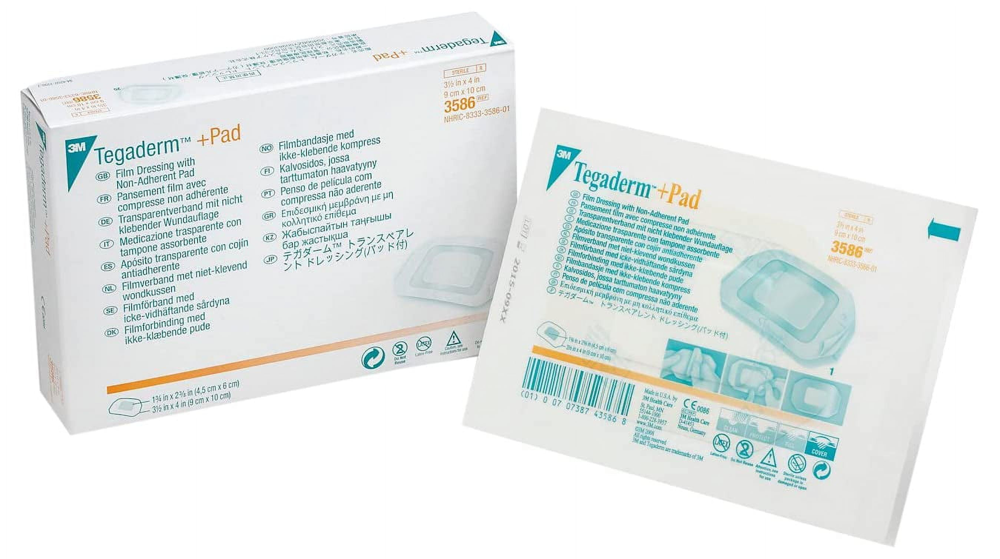
📦 عبوة المنتج الأصليةمنتج رقم [1] | HT-TEGADERM-01
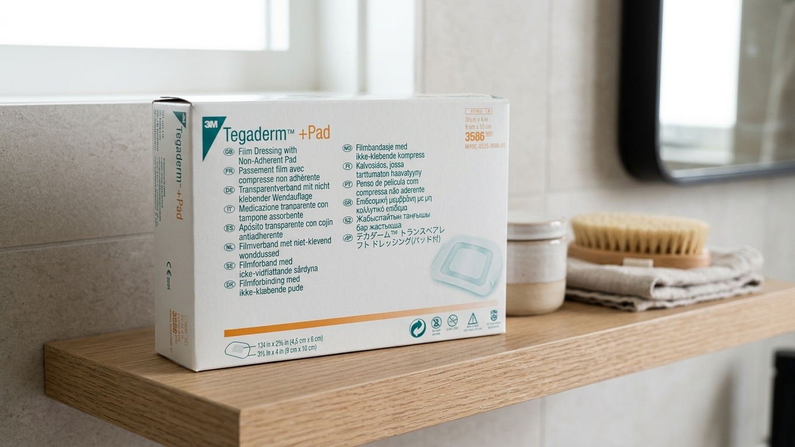
📸 تصوير الاستوديو الحقيقي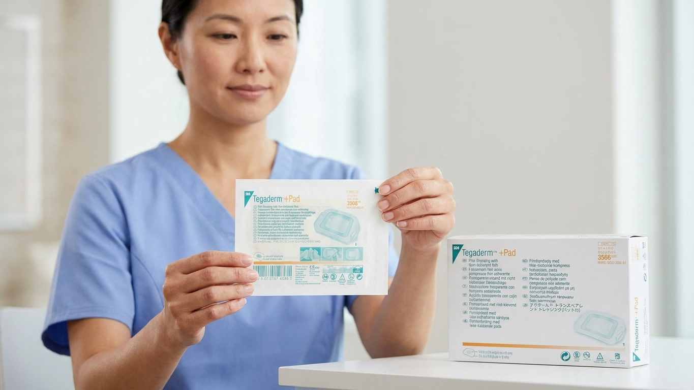
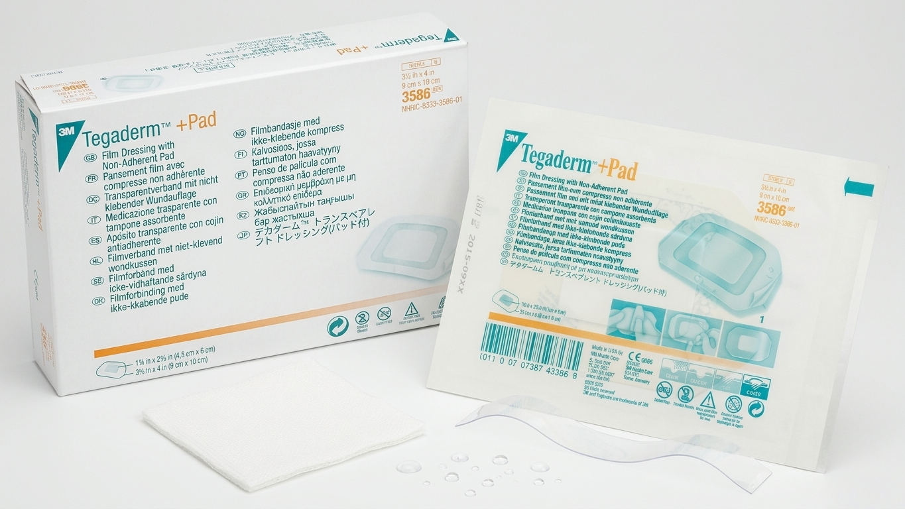
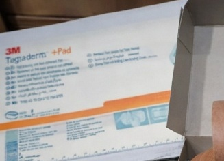
ضمادة تيغاديرم الشفافة المقاومة للماء (3M Tegaderm +Pad Film)
3M Tegaderm +Pad Waterproof Transparent Dressing
🎯 النيتش السريري: العناية بجرح الولادة القيصرية والاستحمام الآمن بدون بلل
- عزل مائي وبكتيري كامل 100% يسمح بالاستحمام (الشاور) الآمن من أول أسبوع
- غشاء بوليمر ذكي يسمح بتنفس الجلد وخروج بخار الرطوبة دون كتم الجرح
- وسادة داخلية غير لاصقة تمنع التصاق الغيار بالغرز أو شد الجلد عند النزع
🎨 قوالب Canva المبرمجة لنيتش هذا المنتج:
• 1:1 بوست: Maternal Post-Op Clinical Authority Card — Deep Forest Green (#064E3B) & Soft Mint (#10B981) waterproof badge layout
• 9:16 ستوري وريلز: Vertical Safe-Shower Step-by-Step Motherhood Recovery Story & Reel Overlay
• 7 شرائح كاروسيل: 7-Slide C-Section Wound Protection & Showering Protocol Infographic
• 16:9 يوتيوب ومقال: Widescreen Obstetric Recovery Explainer Thumbnail & Article Header
منتج رقم [2] | HT-BUPY-SIL-02
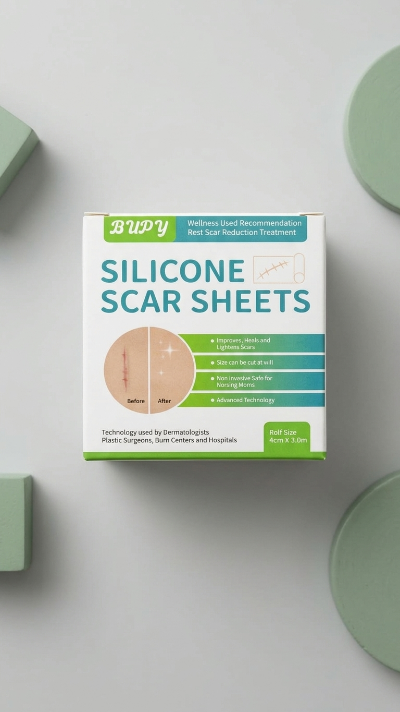
📦 عبوة المنتج الأصلية
📸 تصوير الاستوديو الحقيقي

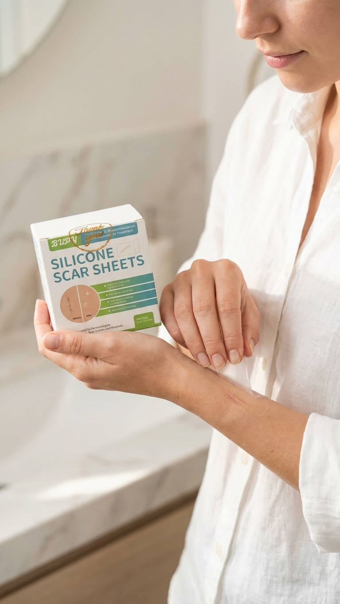
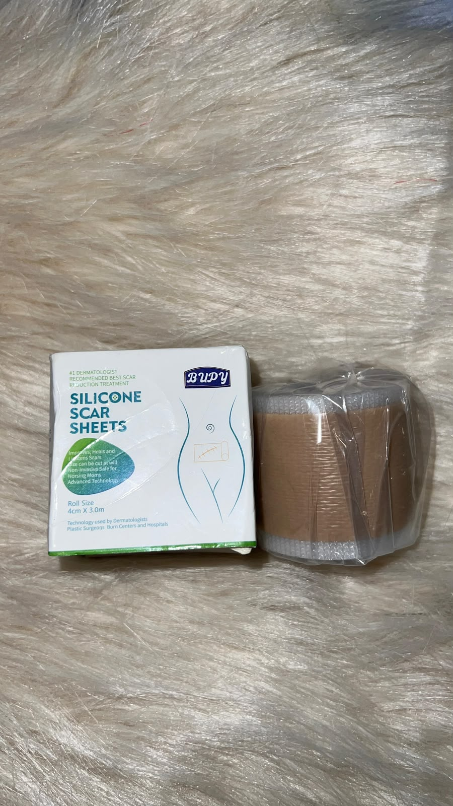
شيت السيليكون الطبي المطور للندبات (BUPY Medical Silicone Scar Sheet)
BUPY Medical-Grade Silicone Scar Therapy Sheet
🎯 النيتش السريري: تسطيح وتفتيح ندبات القيصرية والغدة الدرقية والعمليات ومنع الكيلويد
- تنظيم إنتاج ألياف الكولاجين وتسطيح الندبات البارزة والحمراء (الكيلويد)
- ترطيب طبي مستمر للطبقة القرنية يمنع الحكة والشد الجلدي المزعج
- قابل للغسيل وإعادة الاستخدام لأسابيع بلون بيج تجميلي غير مرئي
🎨 قوالب Canva المبرمجة لنيتش هذا المنتج:
• 1:1 بوست: Dermatology & Aesthetic Scar Remodeling Luxury Clinical Card (#064E3B & #10B981)
• 9:16 ستوري وريلز: Vertical Before/After Collagen Alignment Mechanism & Keloid Prevention Story
• 7 شرائح كاروسيل: 7-Slide Silicone Occlusion Therapy & Scar Maturation Timeline Carousel
• 16:9 يوتيوب ومقال: Widescreen Aesthetic Scar Care & Thyroid Recovery Banner
منتج رقم [3] | HT-MICROPORE-03
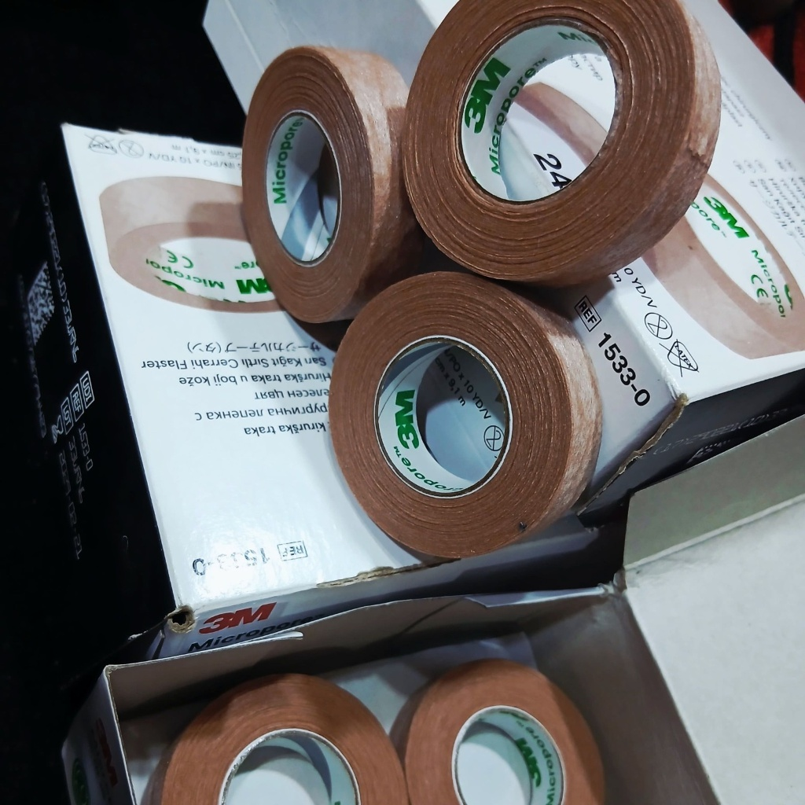
📦 عبوة المنتج الأصلية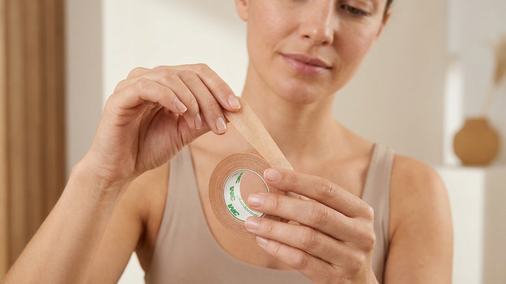
📸 تصوير الاستوديو الحقيقي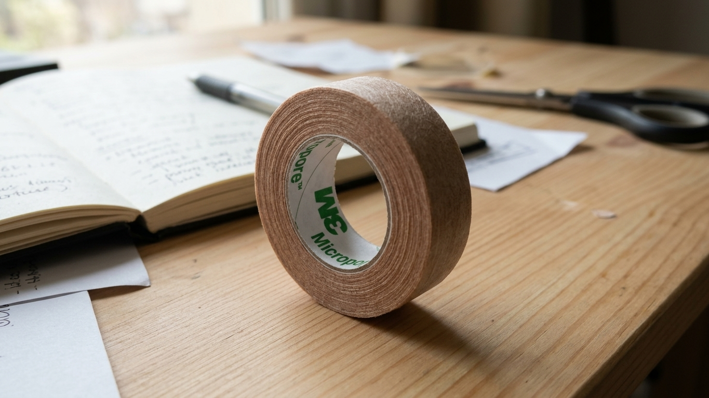
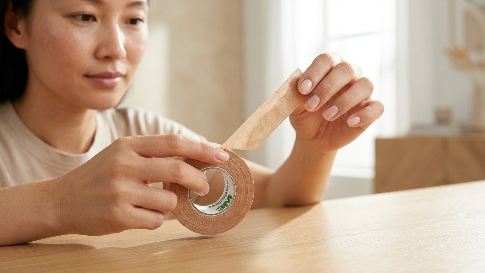
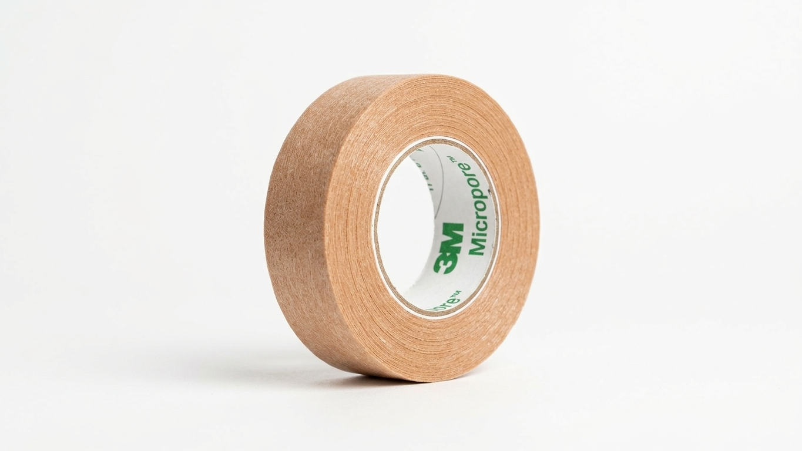
شريط ميكروبور الطبي الملون (3M Micropore Tan Surgical Tape 1533-0)
3M Micropore Tan Hypoallergenic Surgical Tape 1533-0
🎯 النيتش السريري: تثبيت الأنف بعد التجميل وتخفيف التورم وحماية ندبات الرقبة من الشمس
- ضغط متوازن يسرع تصريف السوائل الليمفاوية ويمنع تليف أرنبة الأنف
- لون بيج طبيعي (Tan) يندمج مع البشرة المصرية ويحمي الندبة من التصبغ الشمسي
- لاصق طبي مضاد للحساسية يسمح بمسام التهوية ولا يترك بقايا صمغية
🎨 قوالب Canva المبرمجة لنيتش هذا المنتج:
• 1:1 بوست: Facial Plastic Surgery & Rhinoplasty Taping Protocol Card (#064E3B & Warm Gold)
• 9:16 ستوري وريلز: Vertical Rhinoplasty Taping Technique & Edema Reduction Reel Template
• 7 شرائح كاروسيل: 7-Slide Nasal Taping Step-by-Step Guide & Sun Protection Carousel
• 16:9 يوتيوب ومقال: Widescreen Facial Aesthetic Recovery & 3M Micropore Guide Banner
منتج رقم [4] | HT-NOSTRIL-04
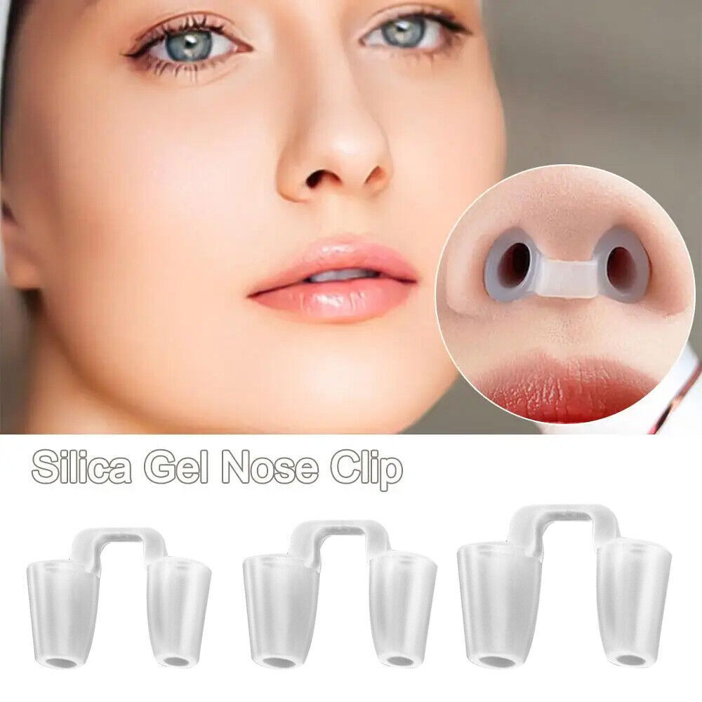
📦 عبوة المنتج الأصلية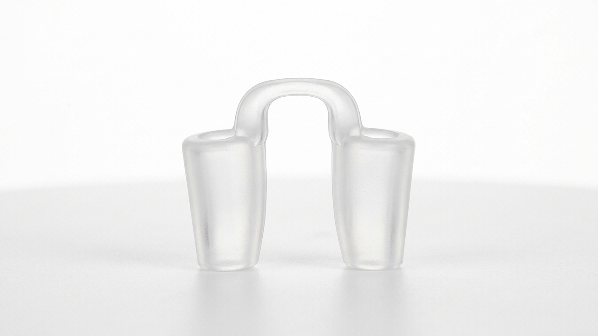
📸 تصوير الاستوديو الحقيقي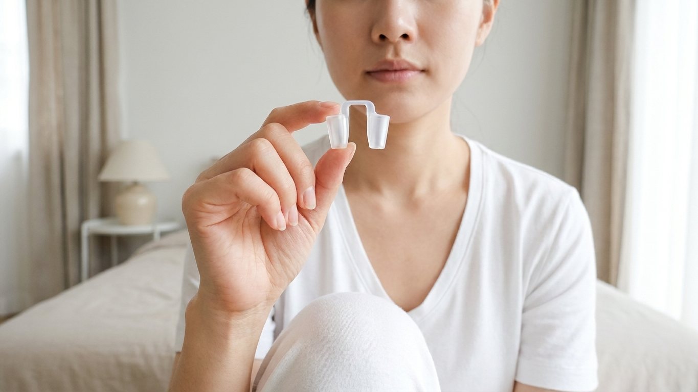
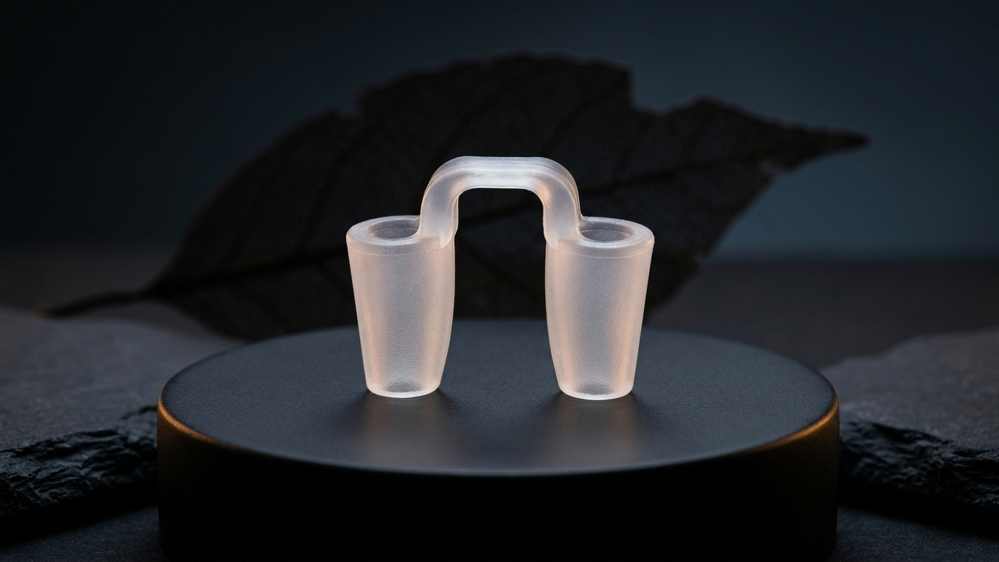
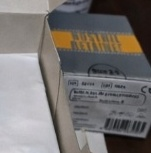
دعامات الأنف السيليكونية الطبية (Silicone Nostril Retainer)
Medical-Grade Soft Silicone Nostril Retainer Splints
🎯 النيتش السريري: حفظ تماثل فتحات الأنف ومنع انكماش الغضاريف بعد عمليات التجميل
- حفظ تماثل فتحات الأنف ومنع التضيق أو الانكماش الغضروفي أثناء الالتئام
- سيليكون طبي فائق النعومة مريح للتنفس والنوم ولا يسبب تقرحات للمخاطية
- تصميم تشريحي متدرج المقاسات يضمن ثبات النتيجة الجراحية النهائية
🎨 قوالب Canva المبرمجة لنيتش هذا المنتج:
• 1:1 بوست: Rhinoplasty Cartilage Symmetry & Nostril Splint Clinical Card
• 9:16 ستوري وريلز: Vertical Nostril Retainer Cleaning, Sizing & Wearing Schedule Reel Template
• 7 شرائح كاروسيل: 7-Slide Post-Rhinoplasty Breathing & Symmetry Preservation Carousel
• 16:9 يوتيوب ومقال: Widescreen Nasal Splint & Post-Op Rhinoplasty Care Banner
منتج رقم [5] | HT-OPSITE-05
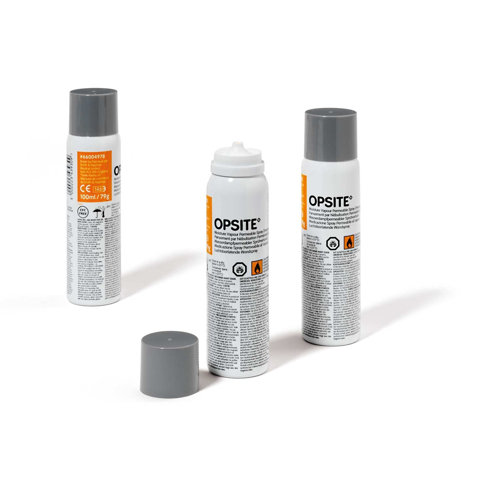
📦 عبوة المنتج الأصلية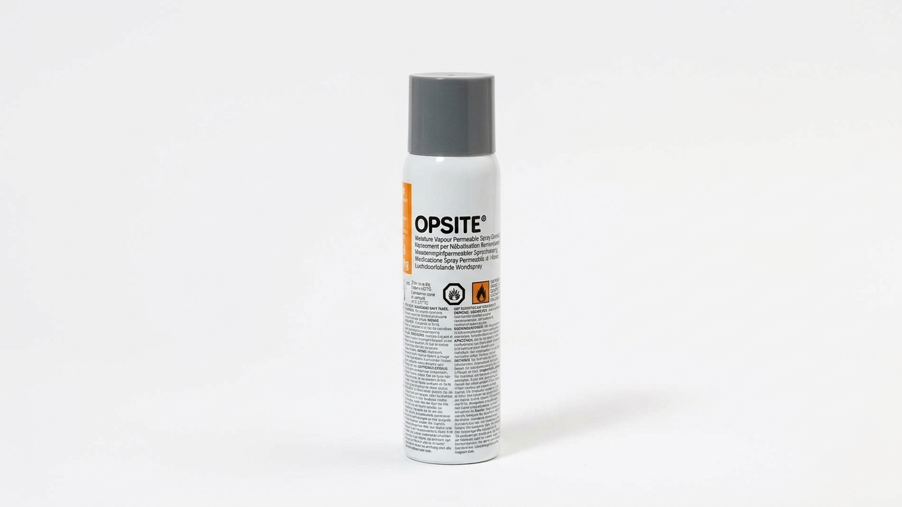
📸 تصوير الاستوديو الحقيقي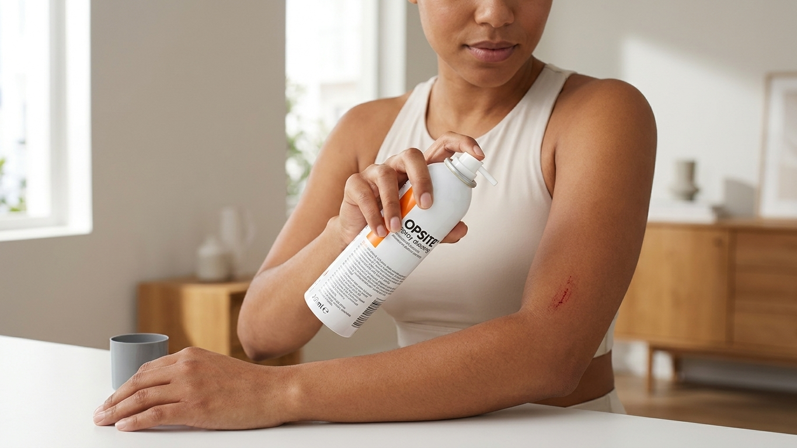
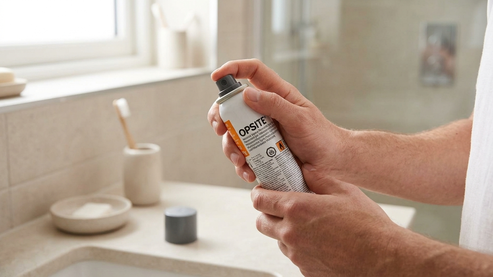
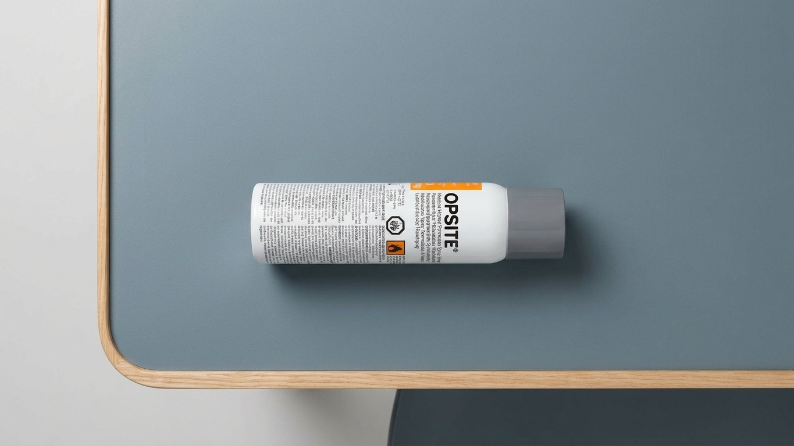
سبراي أوبسايت العازل للجروح (Smith & Nephew Opsite Post-Op Spray)
Smith & Nephew Opsite Transparent Waterproof Wound Spray
🎯 النيتش السريري: عزل ثقوب مناظير التكميم والسمنة والمرارة بحاجز شفاف مقاوم للماء
- تغليف فوري لثقوب المنظار بغشاء شفاف مرن مقاوم للماء والبكتيريا في ثوانٍ
- يتحرك بمرونة مع ثنيات البطن دون شد أو ألم مثل اللصقات الورقية التقليدية
- يتقشر تلقائياً مع تجدد سطح الجلد دون الحاجة لنزع مؤلم للغيار
🎨 قوالب Canva المبرمجة لنيتش هذا المنتج:
• 1:1 بوست: Bariatric & Laparoscopic Spray Barrier Clinical Showcase Card (#064E3B & #10B981)
• 9:16 ستوري وريلز: Vertical 3-Second Spray Application for Sleeve Gastrectomy Port Sites Reel
• 7 شرائح كاروسيل: 7-Slide Laparoscopic Incision Care & Infection Prevention Carousel
• 16:9 يوتيوب ومقال: Widescreen Bariatric Recovery & Opsite Spray Clinical Guide Banner
منتج رقم [6] | HT-BUNDLE-ALL
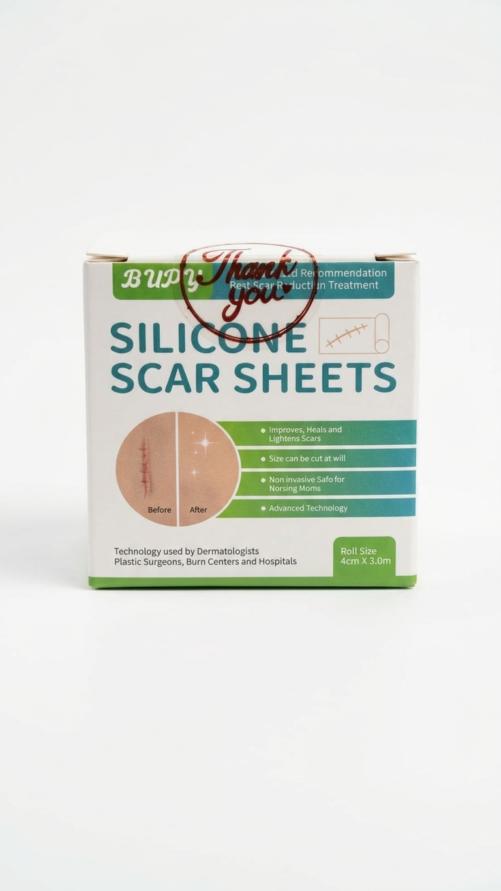
📦 عبوة المنتج الأصلية
📸 تصوير الاستوديو الحقيقي
الحزمة السريرية الشاملة لكافة منتجات هيلينج تاتش مصر (Master Clinical Bundle)
Healing Touch Egypt Complete Post-Surgical Recovery Collection
🎯 النيتش السريري: الموسوعة السريرية الشاملة للعناية بالجروح والندبات بعد كافة العمليات في مصر
- تغطية متكاملة من اليوم الأول للعملية (العزل المائي) حتى التئام وتسطيح الندبة نهائياً
- مستلزمات أصلية معتمدة عالمياً (3M / Smith & Nephew / BUPY) بإشراف أخصائية العناية بالتعافي
- شحن مجاني وحق فتح ومعاينة الشحنة قبل الاستلام عبر كود الأولوية HT10
🎨 قوالب Canva المبرمجة لنيتش هذا المنتج:
• 1:1 بوست: Complete 5-Product Clinical Recovery Encyclopedia Showcase Card
• 9:16 ستوري وريلز: Vertical All-in-One Post-Op Care Kit Overview Story & Reel
• 7 شرائح كاروسيل: 7-Slide Complete Guide: Which Medical Dressing Fits Your Surgery?
• 16:9 يوتيوب ومقال: Widescreen Healing Touch Egypt Master Clinical Catalog Banner